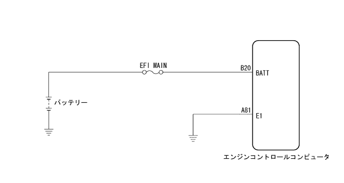
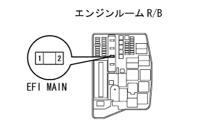
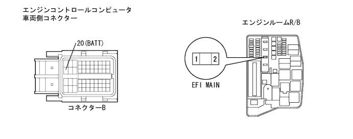

EFI System (2GR-FE) ECU Backup Power Source System |

| Step 1 | Inspect Fuse (EFI Fuse) |
 |
Remove the EFI MAIN fuse from the engine room R/B.
Using SST (Toyota electrical tester), measure the resistance.
| Tester Connection | Condition | Standard |
|---|---|---|
| EFI MAIN fuse | Always | Below 1 Ω |
|
| ||||
| OK | |
| Step 2 | Inspect Wire Harness or Connector (Engine Control Computer - Engine Room R/B) |
Reference
Disconnect the battery negative terminal.
Disconnect connector B of the engine control computer.
Using SST (Toyota electrical tester), measure the resistance between the terminals. (For Terminals of ECU, see)
| Tester Connection (Terminal Symbol) | Condition | Standard |
|---|---|---|
| B20 (BATT) - Terminal 2 | Always | Below 1 Ω |
| B20 (BATT) and terminal 2 - Body ground | Always | 10k Ω or higher |
|
| ||||
| OK | ||
| ||